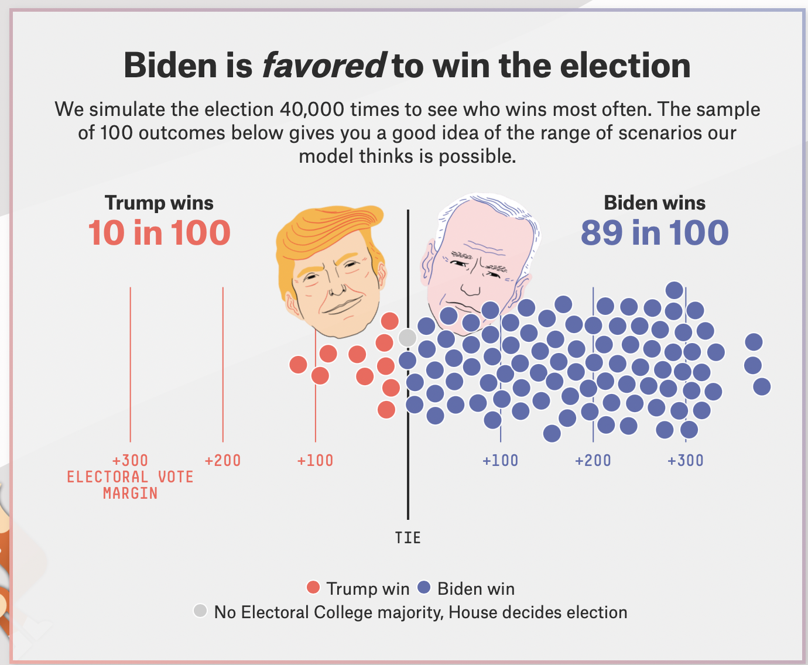
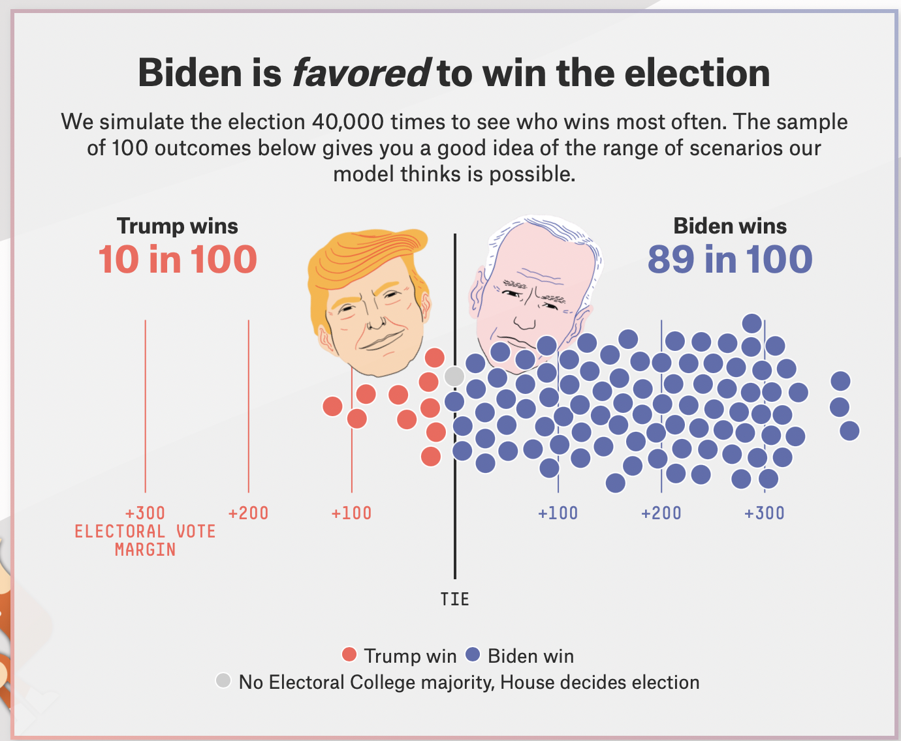
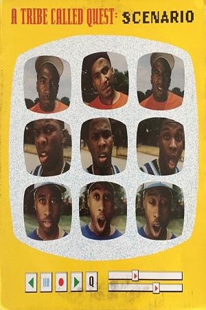
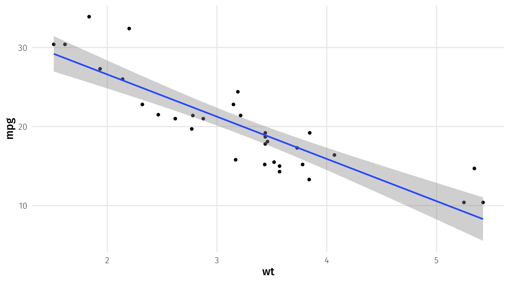
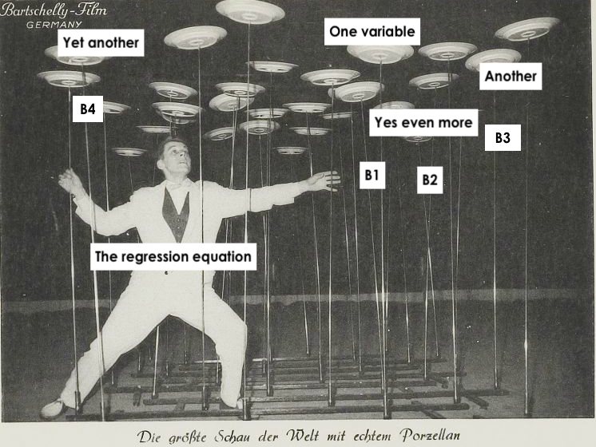
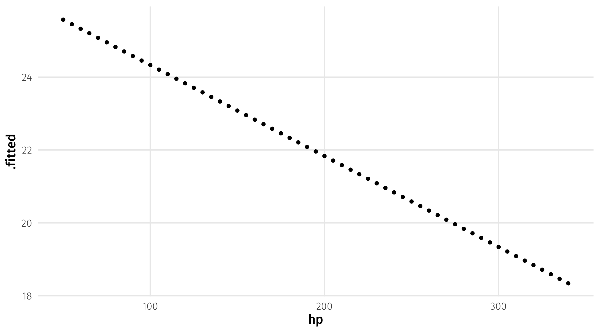
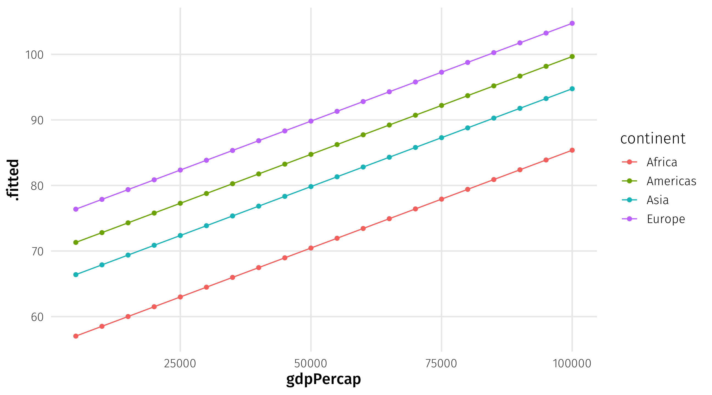

POL51
University of California, Davis
September 30, 2024
Making predictions
Multiple regression
How right are we?

The basics of prediction are pretty straightforward:

Remeber our model is an equation:
\(\widehat{mpg} = 37.29 - 5.34(wt)\)
We only have one explanatory variable to work with (wt), so our scenario can only rely on weight
Scenario: a car that weights 3.25 tons \(\rightarrow\) what fuel efficiency should we expect?
To get an estimate of mpg, we simply plug in the value of “weight” we are interested in:
Estimate for weight = 3.25
\(\widehat{mpg} = 37.29 - 5.34 \times \color{red}{3.25} = 19.935\)
First define the scenario we want a prediction for, using crossing()
Note that I store this as a data object
Note
the variables in crossing have to have the same name as the variables in the model
We can then combine our scenario with our model using augment()
# A tibble: 1 × 2
wt .fitted
<dbl> <dbl>
1 3.25 19.9augment takes the values for our scenario and plugs them in to our model equation to get an estimate
Note we got the same answer as when we did it by hand
Note
We tell augment what our new scenario is using the newdata = argument
We can also look at multiple scenarios, maybe a light, medium, and heavy car:
Or we can look at a sequence of scenarios using the seq() function
Example: estimates for every weight between 2 and 6 tons, in .1 ton increments
And then get predictions for all these scenarios:
Do we really need a model to predict MPG when weight = 3.25? Probably not
The real power of modeling and prediction comes with using multiple explanatory variables
Many factors influence a car’s fuel efficiency; we can use that information to make more precise predictions
| mpg | wt | cyl | hp | am | vs | |
|---|---|---|---|---|---|---|
| Merc 450SE | 16.4 | 4.07 | 8 | 180 | 0 | 0 |
| Hornet 4 Drive | 21.4 | 3.21 | 6 | 110 | 0 | 1 |
| Merc 230 | 22.8 | 3.15 | 4 | 95 | 0 | 1 |
| Maserati Bora | 15.0 | 3.57 | 8 | 335 | 1 | 0 |
Here, a car’s fuel efficiency is a function of its weight (wt), number of cylinders (cyl), horse power (hp), and whether its transmission is manual or automatic (am)
The model equation we want in the end is this one:
\[\operatorname{mpg} = \beta_0 + \color{red}{\beta_{1}}(\operatorname{wt}) + \color{red}{\beta_{2}}(\operatorname{cyl}) + \color{red}{\beta_{3}}(\operatorname{hp}) + \color{red}{\beta_{4}}(\operatorname{am})\]
Just as when we had one variable, our OLS model is trying to find the values of \(\beta\) that “best” fits the data
OLS estimator = \(\sum{(Y_i - \hat{Y_i})^2}\)
Where \(\widehat{Y} = \beta_0 + \beta_1 x_1 + . . . \beta_4 x_4\)
Now searching for \(\beta_0 ... \beta_4\) to minimize loss function

lm() hard at work
| term | estimate |
|---|---|
| (Intercept) | 36.15 |
| wt | -2.61 |
| cyl | -0.75 |
| hp | -0.02 |
| am | 1.48 |
am = 1) have 1.48 more mpg than cars with automatic transmissions (am = 0)Note
Note how the estimate on weight changed as we added more variables
We can make predictions just as before, plugging in values for our explanatory variables
\[ \operatorname{\widehat{mpg}} = 36.15 - 2.61(\operatorname{wt}) - 0.75(\operatorname{cyl}) - 0.02(\operatorname{hp}) + 1.48(\operatorname{am}) \]
With more variables, we can create more specific scenarios
For example: a car that weighs 3 tons, has 4 cylinders, 120 horsepower, and has a manual transmission
\[ \operatorname{\widehat{mpg}} = 36.15 - 2.61 \times \color{blue}{3} - 0.75 \times \color{blue}{4} - 0.02 \times \color{blue}{120} + 1.48 \times \color{blue}{1} \]
\[ \operatorname{\widehat{mpg}} = 24 \]
We can do this in R with crossing() and augment()
Note that your scenario needs to include every variable in your model, otherwise you will get an error
The one below is missing cylinders, which is in big_model, and won’t run:
Note that to make predictions that make sense, we have to look through our data and see what values are plausible for the variables
For example, a scenario where we set am = 3 doesn’t make sense, since am is a dummy variable that takes two values (0 = automatic, 1 = manual)
But R doesn’t know that, and will give you (nonsensical) estimates:
# A tibble: 1 × 5
wt cyl hp am .fitted
<dbl> <dbl> <dbl> <dbl> <dbl>
1 3 4 120 3 26.8Note
Remember data |> distinct(variable) to see a variable’s values
One cool part of multiple regression is that we can see what happens to our estimates when one variable changes but the others are held at a fixed value
Holding all else in the model constant, how does increasing a car’s horsepower change its fuel efficiency?
We can use seq() to see what happens when horsepower changes while everything else is left at a fixed value
varying_hp = crossing(wt = 3, cyl = 4, am = 1, hp = seq(from = 50, to = 340, by = 5))
augment(big_model, newdata = varying_hp)# A tibble: 59 × 5
wt cyl am hp .fitted
<dbl> <dbl> <dbl> <dbl> <dbl>
1 3 4 1 50 25.6
2 3 4 1 55 25.5
3 3 4 1 60 25.3
4 3 4 1 65 25.2
5 3 4 1 70 25.1
6 3 4 1 75 25.0
7 3 4 1 80 24.8
8 3 4 1 85 24.7
9 3 4 1 90 24.6
10 3 4 1 95 24.5
# ℹ 49 more rowsWe could then store our estimate, and use it for plotting
Say we wanted to predict a country’s life expectancy, using population, GDP per capita, the year, and what continent it is in:
# A tibble: 8 × 5
term estimate std.error statistic p.value
<chr> <dbl> <dbl> <dbl> <dbl>
1 (Intercept) -5.18e+2 1.99e+1 -26.1 3.25e-126
2 gdpPercap 2.98e-4 2.00e-5 14.9 2.52e- 47
3 pop 1.79e-9 1.63e-9 1.10 2.73e- 1
4 year 2.86e-1 1.01e-2 28.5 4.80e-146
5 continentAmericas 1.43e+1 4.95e-1 28.9 1.18e-149
6 continentAsia 9.38e+0 4.72e-1 19.9 3.80e- 79
7 continentEurope 1.94e+1 5.18e-1 37.4 2.03e-223
8 continentOceania 2.06e+1 1.47e+0 14.0 3.39e- 42Scenario: what if we wanted to predict the life expectancy of a country with a GDP per capita of $7,000, a population of 20 million, in the year 2005, in Asia?
What if we could “dial up” this country’s GDP slowly? How would its life expectancy change?
Scenario: we can vary GDP and keep all else constant
life_scenario = crossing(gdpPercap = seq(from = 5000, to = 100000, by = 5000),
pop = 20000000, year = 2005,
continent = "Asia")
augment(life_model, newdata = life_scenario)# A tibble: 20 × 5
gdpPercap pop year continent .fitted
<dbl> <dbl> <dbl> <chr> <dbl>
1 5000 20000000 2005 Asia 66.4
2 10000 20000000 2005 Asia 67.9
3 15000 20000000 2005 Asia 69.4
4 20000 20000000 2005 Asia 70.9
5 25000 20000000 2005 Asia 72.4
6 30000 20000000 2005 Asia 73.9
7 35000 20000000 2005 Asia 75.4
8 40000 20000000 2005 Asia 76.8
9 45000 20000000 2005 Asia 78.3
10 50000 20000000 2005 Asia 79.8
11 55000 20000000 2005 Asia 81.3
12 60000 20000000 2005 Asia 82.8
13 65000 20000000 2005 Asia 84.3
14 70000 20000000 2005 Asia 85.8
15 75000 20000000 2005 Asia 87.3
16 80000 20000000 2005 Asia 88.8
17 85000 20000000 2005 Asia 90.3
18 90000 20000000 2005 Asia 91.8
19 95000 20000000 2005 Asia 93.3
20 100000 20000000 2005 Asia 94.8How different would this all look in different continents? We can vary continents too:
life_continent_scenario = crossing(gdpPercap = seq(from = 5000, to = 100000, by = 5000),
pop = 20000000, year = 2005,
continent = c("Asia", "Africa", "Americas", "Europe"))
augment(life_model, newdata = life_continent_scenario)# A tibble: 80 × 5
gdpPercap pop year continent .fitted
<dbl> <dbl> <dbl> <chr> <dbl>
1 5000 20000000 2005 Africa 57.0
2 5000 20000000 2005 Americas 71.3
3 5000 20000000 2005 Asia 66.4
4 5000 20000000 2005 Europe 76.4
5 10000 20000000 2005 Africa 58.5
6 10000 20000000 2005 Americas 72.8
7 10000 20000000 2005 Asia 67.9
8 10000 20000000 2005 Europe 77.9
9 15000 20000000 2005 Africa 60.0
10 15000 20000000 2005 Americas 74.3
# ℹ 70 more rowsWe can then save our predictions as an object, and plot them:
Charles II. His wife: “The Catholic King is so ugly as to cause fear and he looks ill.”
| audiencia | provincia | provcode | year | time | name_approx | appointed | title_raw | military | orden | nobility | noble | rprice1 | suitindex | centerxgd | centerygd | z | distlima | bishop | cumwar | war | twowars | yearfromwar | pop54 | ind54 | gov_reb | mita | mine | econactivity2 | wage | reparto2 | rep50 | totalc | tributonew | mining | alcabala |
|---|---|---|---|---|---|---|---|---|---|---|---|---|---|---|---|---|---|---|---|---|---|---|---|---|---|---|---|---|---|---|---|---|---|---|---|
| Lima | Calca y Lares | 13 | 1715 | 7 | F. De Lasagartua | 0 | Civil | 0 | 0 | 0 | 0 | 3355.759 | 0.8926667 | -71.95901 | -13.35248 | 2905.222 | 570.81799 | 0 | 0 | 0 | 0 | -3 | 6199 | 5519 | 0 | 0 | 0 | 0 | 1000 | 73600 | 0 | 10.98351 | 9.408453 | 8.451267 | 8.875287 |
| Lima | Huarochiri | 37 | 1692 | 3 | Pedro De Legaria | 0 | Civil | 0 | 0 | 0 | 0 | 2044.352 | 0.0647667 | -76.36739 | -11.89083 | 3021.700 | 78.53205 | 0 | 5 | 1 | 0 | 5 | 14024 | 13084 | 0 | 0 | 1 | 0 | 800 | 140000 | 1 | NA | NA | NA | NA |
| Lima | Arequipa | 5 | 1683 | 3 | Francisco De Munon Y Torresgrosa | 0 | Caballero orden de Santiago | 0 | 1 | 0 | 1 | 3130.726 | 0.0061818 | -71.60053 | -16.55599 | 1889.909 | 770.99956 | 1 | 1 | 1 | 0 | 1 | 37261 | 5929 | 0 | 0 | 0 | 1 | 2000 | 123000 | 1 | NA | NA | NA | NA |
| Lima | Huamanga | 34 | 1715 | 10 | Pedro De Velasco Y Lazarraga | 0 | Militar - Capitan | 1 | 0 | 0 | 0 | 3273.911 | 0.8290000 | -74.22577 | -13.16026 | 2656.000 | 329.94941 | 1 | 0 | 0 | 0 | -3 | 25821 | 20373 | 0 | 1 | 0 | 0 | 2000 | 63800 | 0 | NA | NA | NA | NA |
| Lima | Jauja | 39 | 1688 | 3 | Diego De Villatoro | 0 | Civil - Guarda damas de la reina y Caballero de la Orden de Santiago | 0 | 1 | 0 | 1 | 3270.963 | 0.5898966 | -75.28021 | -11.94896 | 3253.586 | 193.32407 | 0 | 1 | 1 | 0 | 1 | 52286 | 28477 | 0 | 1 | 1 | 1 | 1400 | 150000 | 1 | NA | NA | NA | NA |
Using colony:
How much would a noble (noble), without military experience (military) expect to pay (rprice1) for a governorship with a suitability index of .8 (suitindex) and a repartimiento (reparto2) of 98,000 pesos?
Adjust the scenario above so that the repartimiento quota increases from 10,000 to 200,000 in increments of 1,000 pesos, but everything else stays the same. Store as an object and plot to observe the changes.
10:00
How good are our predictions? We could compare our estimate to a real country, say Jamaica in 2007:
| country | continent | year | lifeExp | pop | gdpPercap |
|---|---|---|---|---|---|
| Jamaica | Americas | 2007 | 72.567 | 2780132 | 7320.88 |
Actual:
| country | continent | year | lifeExp | pop | gdpPercap |
|---|---|---|---|---|---|
| Jamaica | Americas | 2007 | 72.567 | 2780132 | 7320.88 |
Estimate:
Our estimate of Jamaica is not really prediction, since we used that observation to fit our model
This is an in-sample prediction \(\rightarrow\) seeing how well our model does at predicting the data that we used to generate it
“True” prediction is out-of-sample \(\rightarrow\) using a model to generate predictions about something that hasn’t happened yet
Imagine in the year 1957 we fit a model with the info we had available at the time:
Now it’s 2007, someone finds the model, and wants to know: how well could this model have predicted the future?
This is an out-of-sample prediction: our model has data before 1957, but our prediction is based off of Jamaica’s characteristics in 2007
Jamaica in 2007:
| country | continent | year | lifeExp | pop | gdpPercap |
|---|---|---|---|---|---|
| Jamaica | Americas | 2007 | 72.6 | 2780132 | 7320.9 |
What our 1957 model predicted for 2007 (out of sample):
| continent | year | pop | gdpPercap | .fitted |
|---|---|---|---|---|
| Americas | 2007 | 2780132 | 7321 | 79.8 |
What our model with all the data predicted, 2007 included (in sample):
| continent | year | pop | gdpPercap | .fitted |
|---|---|---|---|---|
| Americas | 2007 | 2780132 | 7321 | 72.5 |
As a general rule, models will tend to perform worse out-of-sample than in-sample
This is because the model is over-fitting the data \(\rightarrow\) tailoring the model equation too closely to the data we have
Using movies:
Fit a model that predicts gross (outcome) using genre1, duration, budget, year, imdb_score, and whether or not it’s in color.
Look up a movie in the dataset. How well does the model predict a movie that shares that movie’s characteristics?
Look up a movie on IMDB that came out after the data ends (2016). How well does your model predict that movie’s gross?
10:00